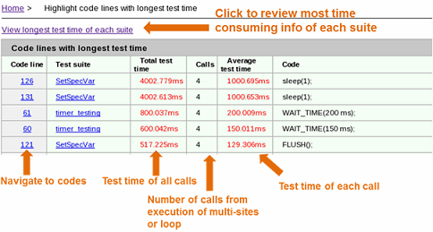
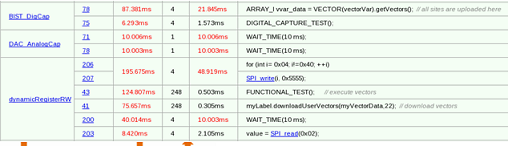

Highlight code lines with longest test time
Test Time Breakdown Analyzer can analyze the test time based on the lines of code. The report shows the most time-consuming lines of code.
To view the details of the report, click highlight code lines with longest test time in the Test time analysis table.
Any lines of code with the execution time longer than the specified value is highlighted. You can specify the value for the "Highlight source code lines if test time is longer than (ms)" in the Preference window. By default, the value is 5 ms.
In this report, you are initially presented with the summary report of code lines with the longest test time as shown below.

Click View longest test time of each suite, to view the report of code lines with longest test time of each test suite as shown below.

Functional changes
- Introduced in SmarTest 7.3.2